When haggling with Stan, one of the things you can do is ask him to list "extras" that the Sea Monkey comes with. There are seven of them (porthole defoggers, anti-lock anchor, rack-and-pinion rudder, velour sail covers, tack-o-meter, elevator made with wood from burgundy wine casks, and simulated wood siding), and each can be accepted or declined. Declining an extra makes Stan deduct the price of the extra from the current price of the ship.
The game uses an array of numbers to say how much each individual extra is worth. It looks like this:
0 :0 1 :450 2 :450 3 :450 4 :450 5 :450 6 :450 7 :450
If you think this looks reduntant, you'd be correct - all seven extras are supposed to cost 450 pieces of eight. Maybe at some point they were thinking about having some be worth more than others?
Anyway, the more important thing to take note of here is that suspicious-looking zero at the top of the array. Computers start counting from zero, but whoever set up this array either forgot or didn't care to follow this principle - which is technically fine for something like this, as long as you remember to be consistent about it.
The problem is that the programmers weren't consistent.
When Stan is actually offering you an extra, the game keeps track of which extra he's currently offering as a number between 0 and 6, and then uses that number as an index into the price array. And so we end up with the following mapping:
porthole defoggers :0 anti-lock anchor :450 rack-and-pinion rudder :450 velour sail covers :450 tack-o-meter :450 burgundy elevator :450 simulated wood siding :450 ??? :450
The end result of this is that rejecting the porthole defoggers will have no effect on the price of the ship, because the game thinks they're worth zero pieces of eight.
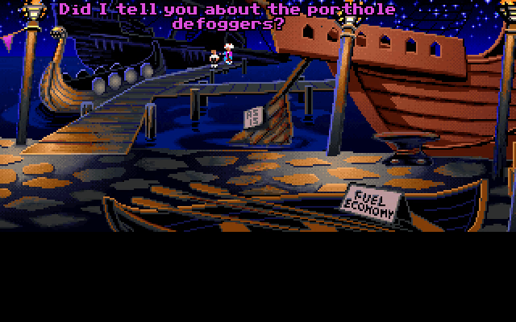
There are three things that we can do to affect the price of the ship, which starts at 8000 pieces of eight. But first, it's important to note that when you ask Stan what price he's offering, he'll tell you a price that's 2000 pieces of eight higher than what he'll actually accept in reality (this is done to create the impression that he's "meeting you in the middle" when he accepts a price below what he claims to be offering). Whenever I talk about the price of the ship here, I'm talking about this hidden "true price", not whatever Stan's advertising.
Firstly, we can reject all of the extras - though as we've just seen, only six of them actually matter. This will lower the price by 2700, bringing us down to 5300 pieces of eight.
Secondly, we can tell him we're not interesting and try to walk away up to three times. He'll lower the price by 1000 the first time, then by 500, and then by 100, but after walking away for the fourth time he'll stop trying. This brings us down to 3700 pieces of eight - low enough for us to buy if we offer 4000 or 5000.
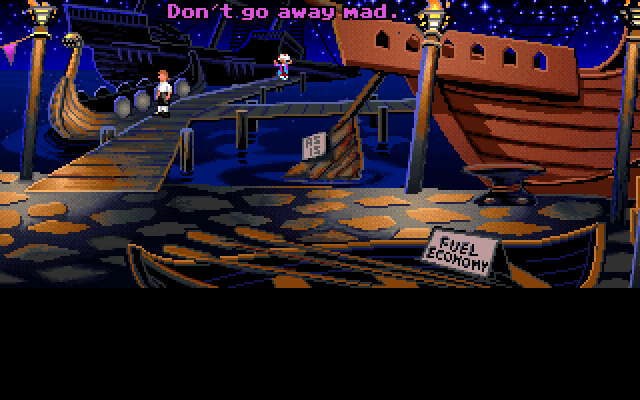
Thirdly, we can make offers of our own. We can choose to offer 2000, 3000, 4000, or 5000 at any time. If the offer is greater than or equal to the current price, Stan will accept and sell us the ship, otherwise he'll raise or lower the price depending on the offer. The way this happens is a little confusing to explain, but I'll do my best.
Mathematically-speaking, what happens is this: the first offer won't do anything, but every subsequent offer changes the price by half of the difference between the previous offer and the new offer.
if previous_offer !=0 : price += (previous_offer - new_offer) /2 previous_offer = new_offer
It's not super easy to wrap your head around what this does in practice, so here's a more intuitive way of conceptualizing what's actually happening:
The first offer creates a permanent reference point locked to that offer, which represents a "price change" of zero. Every offer higher than that reference point lowers the price by an additional 500, and every offer lower than the reference point raises the price by an additional 500. Because of this, our initial offer creates a sort of "window" of possible price changes that we can access through this method.
If we initially offer 3000, for example, our window looks like this:
---- :+1500 ---- :+1000 2000 :+500 3000 :0 <- initial offer 4000 :-500 5000 :-1000 ---- :-1500
These price changes don't compound - making a new offer just replaces the current price change with a new one. So if we start by offering 3000, the most we'll ever be able to deduct from the price by making offers is 1000.
Something interesting happens if we choose 5000 as our first offer:
2000 :+1500 3000 :+1000 4000 :+500 5000 :0 <- initial offer ---- :-500 ---- :-1000 ---- :-1500
We can now only raise the price or go back to where we started, because our window only covers the positive numbers. We've now permanently locked ourselves out of meaningfully lowering the price through this method.
For optimal results, we must first offer 2000, and then offer 5000, which will lower the price by 1500.
All together, the lowest possible price will be 2200 pieces of eight - just barely too expensive to buy with 2000, but affordable with an offer of 3000 or higher. When he accepts, he'll say a special line where he shouts the offer incredulously.
Then there's an unused line that's supposed to trigger if you manage to buy the ship for 2000, which isn't possible:
"TWO THOUSAND LOUSY PIECES OF EIGHT!?!"
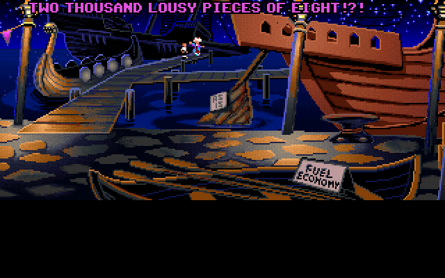
However, if it wasn't for the porthole defoggers glitch from earlier, we could actually deduct an extra 450 from the price - enough to push it over the edge and let us buy the ship for 2000! I'm sure this isn't a coincidence - they probably fine-tuned the numbers specifically so that you could buy it for 2000 if you min-maxxed everything, but overlooked the fact that the porthole defoggers make this impossible.
Internally, SCUMM has no distinction between inventory items and hotspots in the environment - both are the same type of data structure, known as "objects". Any object can have a graphical representation within a scene, and can be placed in Guybrush's inventory. Items that can be picked up will typically have both a visual representation in the environment, and code telling it how to behave when it's in your inventory, while items that only ever exist in the inventory will just be defined in code with no graphics attached (the icons in the CD version are handled completely separately).
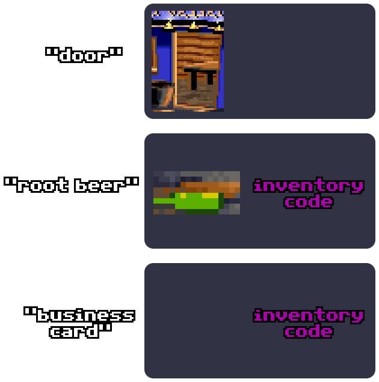
When we leave the Shipyard, Stan will give us a magnetic compass on our way out, and this item is a peculiar exception to the pattern I just described. Even though it only ever exists in our inventory, it does have a very small (8x8) image attached to it, for some reason.
If made visible, it appears on the roof of Stan's office, on the second S in the sign.
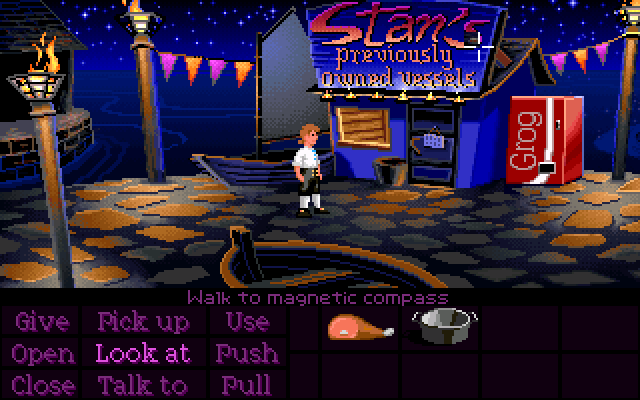
But even though it's normally invisible, it's still interactable as long as it's not yet in your inventory! If you visit the Shipyard before finishing the trials and mouse over this tiny invisible spot on the S, you can highlight the compass and make Guybrush look at it.
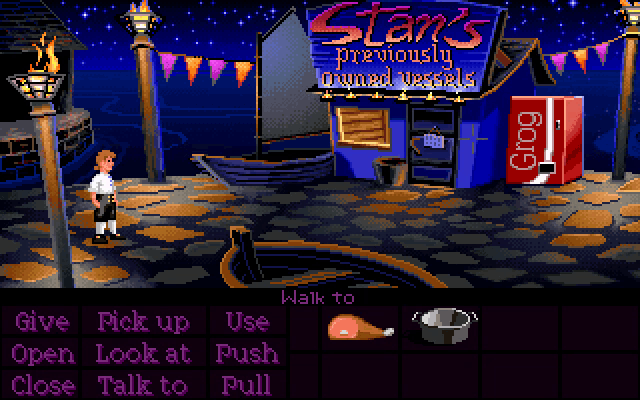
But what the heck is this image supposed to be, anyway? It certainly doesn't fit in that spot on the roof.
It's actually identical to the rightmost of these two shapes (hooks? bolts?) at the bottom of this bollard that the expensive ship is tethered to, way on the other side of the room.
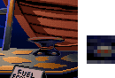
So what's going on here? Why is the image for the "magnetic compass" a duplicate of this section of the background, and why is it in a completely different spot from the part of the background it's copying?
One explanation is that the compass was at one point sitting on the floor here for you to pick up, and this image is supposed to be that spot after the compass has been taken, but I think the fact that it has no "walk position" defined makes this theory less plausible (that's why Guybrush tries to walk off the left side of the screen when we click it, by the way), and it also doesn't explain what it's doing on the roof.
I think the more likely explanation might come from the way that objects and backgrounds were drawn in the same image file before being exported, which is something we can see at 3:17:48 in the VGHF Monkey Island stream.
So, there'd be a single image file that contains the room background on one side, and then each object is drawn "out of bounds" to the right of the main image. Each object is then automatically cut out and turned into its own separate image resource along with the main background, before being packed into the game.
Maybe the magnetic compass used to exist in a different room that was horizontally shorter before being moved to the Shipyard, and that bollard happens to be in the same spot as the original image for the compass, which used to be safely "out of bounds" in the compass's native room - hence why the compass now takes on the appearance of part of the bollard?
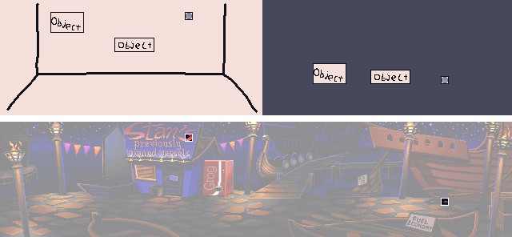
The object IDs in the floppy versions would seem to back this theory up. Nearly all of the objects in the Shipyard occupy the range of IDs between 671 and 712, but the compass is an outlier with ID 800, which implies it could have been moved from a different room. So where could it have been?
IDs 801 to 818 are all objects on the Ghost Ship deck. It's possible that the compass was here, but the placement doesn't make any sense, since it would have been floating in the air. On the other side, we have IDs 792 to 797, corresponding to objects in Captain Smirk's closeup (in fact, they're all bits of his face), which definitely isn't right. Then we have IDs 798 and 799, which... don't exist. Maybe there was a (presumably very small) cut room containing objects 798, 799, and 800, which could be where our compass came from?
We've gone wildly into the territory of informed speculation now, but I think the most likely place for this hypothetical missing room would be on the Ghost Ship somewhere, considering how these object IDs are next to the ones for the Ghost Ship deck, and the fact that the Ghost Ship is a very self-contained area with the compass being the only "external" item you need once you're on board. Maybe the Ghost Ship had a reachable crow's nest, much like the Sea Monkey does? Or maybe it was on the upper deck where the helm probably would have been, and where you'd expect to find a compass, which is blocked by a dog in the finished game?
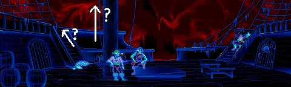
The high-up placement of the compass, plus the fact that it hasn't been given a walk-to position (for reference, Guybrush can't move in the Sea Monkey's crow's nest) makes the crow's nest idea seem slightly more likely to me.
It's also worth noting how the Ghost Ship room IDs are laid out:
71 :gh_room (brig) 72 :gh_captains (LeChuck's cabin) 73 :gh_crews (sleeping quarters) 74 :gh_storage (cargo hold) 75 :gh_hull (animal deck) 76 :cu_trainer (Smirk's closeup) 77 :gh_deck (main deck)
The IDs of all six Ghost Ship rooms are within the range of 71 to 77, but they conspicuously skip over number 76. Room 76 isn't missing - it's Smirk's closeup - but the fact that the Ghost Ship rooms are almost contiguous but with a one-room gap suggests that something could have been cut during an early stage of development, with something else then filling its slot in the room order.
All of this is of course very heavy speculation. Nearby rooms tend to have similar room numbers, and objects within a room tend to have similar object numbers, but it's not a rigid pattern and there are countless exceptions throughout the game. We can't draw any reliable conclusions here.
The game contains a secret debug function to skip the ship haggling. It was probably used during development, as there doesn't seem to be any way to activate it in the finished game.
If triggered, Guybrush will say "Just give me the goddamned ship.", and the game skips straight to the point where Stan sells you the ship.
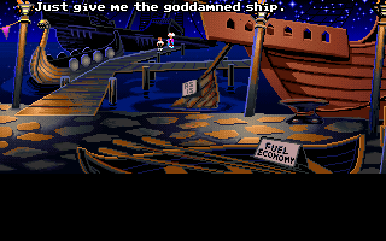
Although this line is unused, Dominic Armato recorded it anyway for the Special Edition - only he says "gold-darned" instead, because they must have needed it to be family-friendly.
If you try to put a piece of eight in the grog machine, it will swallow it and not give you anything.
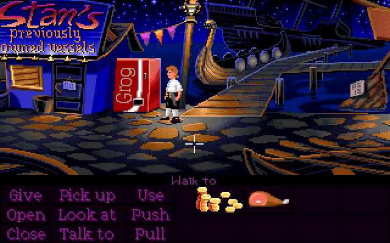
There's no upper limit on how much money you can put in, which means if you keep doing it before buying everything you need, you'll eventually softlock yourself.
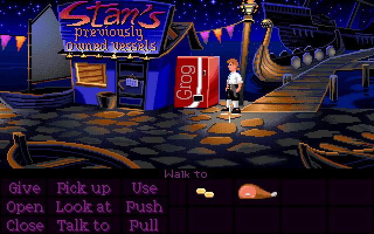
If you buy everything and then do this with the rest of your money, you can get some unique dialogue when talking to Stan: "Actually, I don't have any cash."
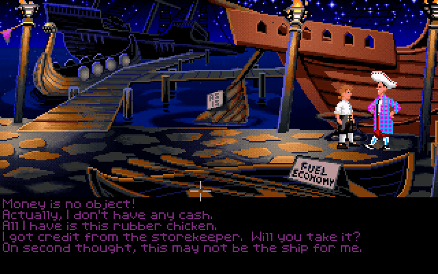
Also, if you try to do this, you'll encounter a very strange glitch in which trying to put a piece of eight into the machine will fail exactly 40% of the time (yes, really). Your 1st, 2nd, and 4th attempts will work normally, while your 3rd and 5th attempts are met with "that doesn't seem to work", and then the same pattern repeats indefinitely. I've tried very hard to get to the bottom of this and come up short. Maybe if I figure it out some day, it can get its own section.
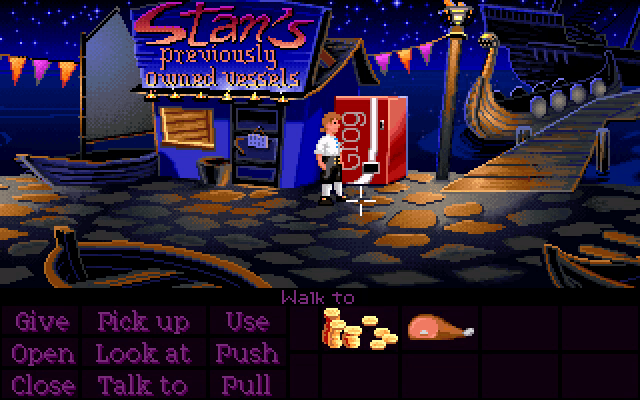
The Shipyard contains a whopping nine unused animation frames for the six small flames below the sign on Stan's office, as well as a partially-implemented script to make them flicker, much like the larger braziers.
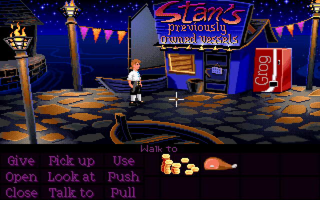
In the actual game, they don't animate. Maybe the developers weren't happy with how it looked?
In the VGA versions, every room gets its own unique 256-color palette. However, the developers chose to keep some sections of the palette the same in every room, allowing those colors serve as a "universal" palette that actors, inventory items, and UI can all use, while leaving the rest of the palette free for each room to do what it wants with. This is why characters and UI generally look the same no matter which room you're in.
In the Shipyard, the CD version breaks this design pattern by meddling with the "universal" palette for no discernible reason. The most noticable effect of this is that the yellow petals become a sickly green color, but many other items are also affected.
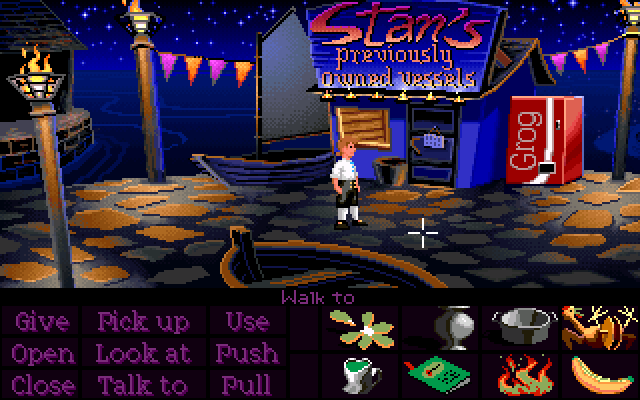
Guybrush himself looks very slightly different, as well. The midtone on his trousers and shoes is more of a dark brown instead of grey.
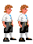
The VGA floppy version doesn't have inventory icons, but taking a look at the Shipyard palette shows that it's completely normal, which means this is a CD innovation.
Here's a comprehensive comparison of every affected item, including those that aren't obtainable during Part 1, although most of them are barely noticable:
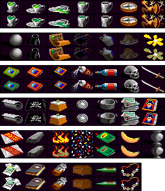